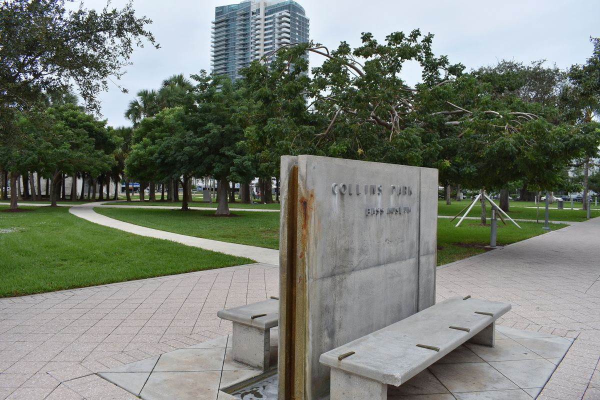
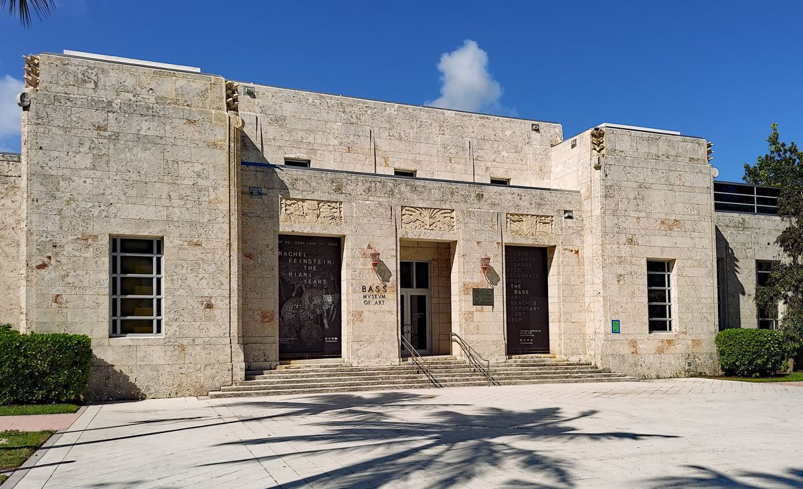
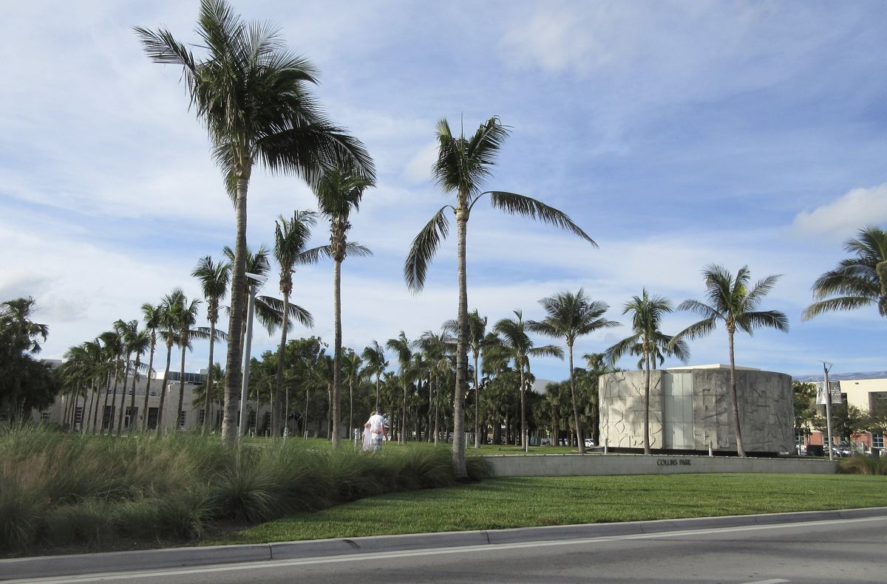

LaneSync
A sprint timer. Two phones, or a phone and an Apple Watch, time runners from the start signal to the finish line, with automatic finish detection.
Privacy policySmall, careful mobile apps, made in Miami Beach.
Collins Park Enterprises LLC is a Florida limited liability company that designs and develops mobile apps for iPhone, Apple Watch and Android. We build focused tools that do one job well, keep your data on your device wherever possible, and never show ads.
We are based in the Collins Park neighborhood of Miami Beach, steps from The Bass museum.

A sprint timer. Two phones, or a phone and an Apple Watch, time runners from the start signal to the finish line, with automatic finish detection.
Privacy policySprint video analysis. Record or import a sprint and see a pose skeleton overlay, measurements and coaching tips. Optional StrideLab Pro subscriptions.
Privacy policyShows the Miami Beach trolley in real time, with arrival countdowns for nearby stops and the city water taxi schedule.
Privacy policy
Email: austin.munoz@collinsparkenterprises.com
Mail: Collins Park Enterprises LLC
2100 Park Ave Apt 304
Miami Beach, FL 33139
United States
